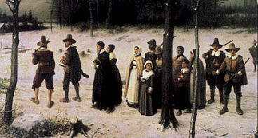
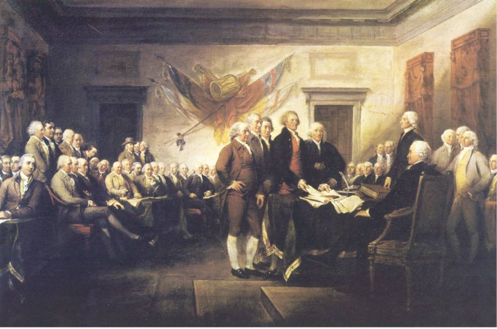
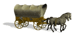
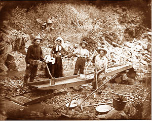

| |
American
History
Subject Guide to Library Resources Available
|
|
|
|
The land of America had a long and proud history of native
indigenous communities and great civilizations prior to the
coming of the Europeans to the North American continent in
the 17th century A.D. This guide will focus on American history
from the coming of the pilgrims, the formation of the United
States of America, and on to modern times. The guide will
assist you in finding materials at the Long Beach City College
Library, through other libraries, and via the Internet.
|
| A
good place to start a paper is to read a little general literature
about the field (encyclopedia, internet article) and look up
basic terms that are unfamiliar to you. The Encyclopedia
Britannica (in print or online)
is an excellent source of information on topics about American
History.
The
next step would be to look for books which cover or touch
upon your specific topic. Use the chapter headings and indexes
of books that seem relevant to zero in on your topic.
Finally,
look for journal articles focused on your specific area of
inquiry for more in-depth and recent coverage.
|
|
When
unable to find answers to your questions in these resources, the
internet and other reference books will often give you new leads
to the answers. Finally, don't forget the wealth of information
contained in videos. Your research about United States history will
be enhanced by information and visual material documented in videos.
FIND
REFERENCE TOOLS

Pilgrims
Founded Plymouth Dec. 1620 |
Reference
tools such as indexes, directories, bibliographies, guides,
encyclopedias and atlases are generally found in a reference
area where many people can refer to general information.
Items found in reference areas cannot be checked out of
the library.
Occasionally other copies of reference-type items can
be found in the circulating collection for you to check
out.
|
To
find articles and books on various aspects of American History,
the main printed indexes in the Reference Area to use for extensive
research are (use Interlibrary
Loan to request books & articles not
available at LBCC):
Humanities
index.
Location: LAC Index Table (Reference
Room) Call Number: AI3 .H85
Social sciences index.
Location: LAC Index Table (Reference
Room) Call Number: AI3 .S62
(Previous volumes known as Social Sciences & Humanities
Index AI3 .R49)
Reference
Books--a sample of what is available
American decades. 1994-
Location: LAC Reference Room Collection. Call Number: E169.12
.A419
Location: PCC Reference Room Collection. Call
Number: E169.12 .A419
American Heritage encyclopedia of American history. 1998.
Location: LAC Reference Room Collection. Call Number: E174
.A535 1998
Location: PCC Reference Room Collection. Call Number: E174
.A535 1998
Dictionary
of American history. 2003.
Location: LAC Reference Room Collection. Call Number: E174
.D52 2003
Location: PCC Reference Room Collection. Call Number: E174
.D52 2003
Encyclopedia of African-American culture and history. 1996.
Location: LAC Reference Room Collection. Call Number: E185
.E54 1996
Location: PCC Reference Room Collection. Call Number: E185
.E54 1996
Encyclopedia of American political history. 2001.
Location: LAC Reference Room Collection. Call Number: E183
.E48 2001
Location: PCC Reference Room Collection. Call Number: E183
.E48 2001
Great American history fact-finder. 1993.
Location: LAC Reference Room Collection. Call Number: E174
.Y36 1993
Location: PCC Reference Room Collection. Call Number: E174
.Y36 1993
Webster's guide to American history. [1971]
Location: LAC Book Shelves. Call Number: E174.5 .W4
Location: LAC Reference Room Collection. Call Number: E174.5
.W4
Who's who in African-American history. 1994.
Location: LAC Biography Reference (Reference Room).
Call Number: E185.96 .W54 1994
Location: PCC Reference Room Collection. Call Number: E185.96
.W54 1994
|
|
FIND
BOOKS IN THE CATALOG

Constitutional
Convention |
Books
can be located by searching Voyager,
the Library's online catalog. Use terms as those found below in a keyword
search for the best results. Then follow subject links in desired
records to find more similar records.
To
find Electronic
books in Voyager
which can be read online from home, try a search using general
terms and adding a Quick Limit of E-Books. You will need
to view the record for the book to click on the link to
the website that hosts the book. To view from home you will
need passwords which can be found with the passwords for
online databases available from the librarians. |
Some of
the topics you might search the online catalog for concerning
American History might not use the exact wording you are looking
for.
Try a keyword search and look at the subject headings assigned
to some of your hits, then link to those subject headings for
more records. If you don't find records in the LBCC Library
for what you need, try searching online
databases for articles and search other
libraries for books. You may use Interlibrary
Loan to request books not found at LBCC.
Here are some suggested Subject Headings or Keywords to search
in Voyager:
African
Americans
African Americans Migration
America History (not United States)
America Maps
Civil Rights
Cold War
Depressions 1929
Feminism
Indians of North America
Industrial Revolution
Labor Unions
United States
Louisiana Purchase
Manifest Destiny (United States)
Marshall Plan
Migration Internal United States
New Deal
Populism United States
Progressivism (United States Politics) |
|
|
Reconstruction
Slavery America
Slaves
Slaves Emancipation United States
Underground Railroad
United States Emigration and Immigration
United States History Colonial Period
United States History 1775-1783
United States History Revolution
United States History Civil War
United States History 1865-1898
United States History 20th Century
United States History War of 1812
United States History War with Mexico
United States Territorial Expansion
Urbanization
World War 1914-1923
World War 1939-1945 |
You can also
browse the shelves by the Library of Congress Classification letters
assigned to books in these subject areas either in the Reference
Area or on the stack level listed for books that can be checked
out:
|
|
Find
these call numbers on Stack Level 2, Basement of LAC:
E51-73
Pre-Columbian America. The Indians
E75-99 Indians of North America
E81-83 Indian wars
E101-135 Discovery of America and early explorations
E151-889 United States
E173 Sources and documents
E176-176.8 Biography
E183-183.3 Political history
E184-185.98 Elements in the population
E184.5-185.98 African-Americans
E185.2-185.89 Status and development since emancipation
E185.96-185.98 Biography. Genealogy
E186-199 Colonial history (1607-1775)
E199 French and Indian War, 1755-1763
E201-298 The Revolution, 1775-1783
E300-453 Revolution to the Civil War, 1775/1783-1861
E433 Slavery question, 1853-1857
E438 Slavery question, 1857-1861
E441-453 Slavery in the United States. Antislavery movements
E456-655 Civil War period, 1861-1865
E668 Reconstruction, 1865-1877
E669 Purchase of Alaska, 1867
E780 Internal history during World War I
E839.8 Un-American activities E840-840.2
E841-843 Kennedy's administration, 1961-November 22, 1963
E842.9 Assassination, funeral, memorial services, etc.
E846-851 Johnson's administrations, November 22, 1963-1969
E855-861 Nixon's administrations, 1969-August 9, 1974
E860-861 Watergate Affair. Resignation
E865-868 Ford's administration, August 9, 1974-1977
E872-875 Carter's administration, 1977-1981
E876-880 Reagan's administrations, 1981-1989
E877.3 Assassination attempt
E881-884 Bush administration, 1989-1993
E885-889 Clinton administration, 1993-2001
E895-904 Twenty-first century
E902-904 George W. Bush's administration, 2001-
Class F F1-975 United States local history
|
FIND
VIDEOS
| 
Some
videos may be found in Voyager,
the online catalog, to be checked out. First select a Quick
Limit of Videorecordings, then do a keyword search
for American History or a term from above.
You
may also view videos inhouse from the Instructional Media
Collection. Search Medianet
for American History or a term from above.
|
|
FIND
ARTICLES
A few periodical
titles currently held by the LAC library in hard copy and containing
information on American History include:

Gold
Rush
|
American Heritage
American Historical Review
Americas
Arkansas Historical Quarterly
California History
Current History
Facts on File
Hispanic American Historical Review
Historian
History & Theory
History Today
Journal of American Folklore
Journal of American History |
Journal of Black Studies
Journal of Conflict Resolution
Journal of Contemporary History
Journal of Modern History
Journal of Negro History
Journal of the West
Journal of Urban History
Negro History Bulletin
Pacific Historical Review
Society of Archivists
The Wilson Quarterly
World Press Review
Virginia Quarterly Review |
The Library
has a subscription to several online
databases containing information on research on
American History. These databases are particularly helpful in
finding information as many journals can be searched simultaneously
by the keywords you select. The full-text is then most often available
online for printing or sending to your email account. Some of
these databases include:
|
Biography
Resource Center
CQ Researcher
Encyclopaedia Britannica
Facts.com
Facts on File On-Line
Matter of Fact
Opposing Viewpoints
ProQuest
SIRS Government Reporter
SIRS
Researcher
|
Pearl
Harbor & Entrance into WWII |
Only current
faculty, students or staff may use these databases. Ask for passwords
at the Reference Desk at either Library. The Librarians can instruct
you on using these article databases. There is a free
workshop offered for learning the ins and outs
of online database searching.
FIND
INTERNET RESOURCES
Many good
resources can be found on the Internet for current research, basic
information, and indexes to more resources. You will also come
across many sites produced by school classes and others that will
not carry the authority you might be looking for. So review the
origin of the information you find carefully. Follow the links
by clicking on the pictures on this page. Below are a few more
helpful sites for American History research:
WRITING/RESEARCH
ASSISTANCE
| |
While
you are writing your paper, there is an online subject guide,
Writing
Tips, with links to online help for organizing and formulating
your paper, and finding online dictionaries and citation
tools.
There
is also a Writing Center at both campuses to help you with
the fundamentals of your paper, for information call the
Writing Center: at LAC (562)
938-4520 and at PCC:
(562) 938-3991.
|
|
Increase Your Research Skills!
Enroll for Lib1 (Information
Resources 1-credit)
or Lib3 (Information Competency 3-credits)
|
 Library
Homepage
Library
Homepage |
http://lib.lbcc.edu/handouts/amerhist.html
Compiled 4/2004 by P. Nielson
|
|